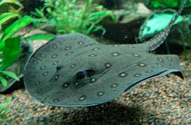
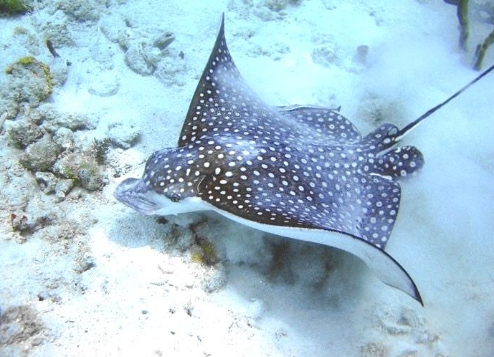
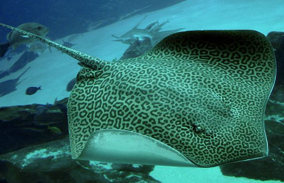

Stingrays are fascinating animals with unique adaptations that help them survive in oceans around the world. Below are some interesting facts about different types of stingrays and how they live.

Let's Dive Deeper

Stingrays often bury themselves in sand to hide from predators and ambush prey using their flat bodies.

Some stingrays can glide smoothly through water using their large pectoral fins like wings.

Stingrays use electroreceptors to detect hidden prey under sand and in murky water.